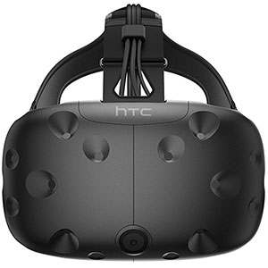
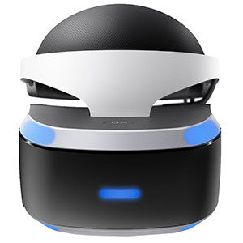
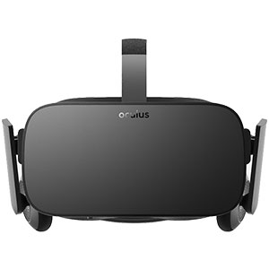

PC VR Powerhouses
Tethered virtual reality headsets, also known as desktop VR or PC VR headsets, require a constant connection to a powerful computer and often make use of external sensors or cameras to track the user's position. This helps provide users with high-quality immersion in a virtual environment but, in return, demands a certain amount of setup space (sometimes even a dedicated room) as well as a powerful PC configuration. We detail some of these technical considerations towards the end of this article.
Thanks to a growing public interest for VR and massive investment from giant tech companies, more and more tethered HMDs are available on the market. As it can be challenging to search through this booming market, the goal of this page is to give new users insight on popular brands.
Top 5
HTC VIVE
The HTC VIVE, released in 2016, is one of the pioneer VR headsets for PC. It is without a doubt one of the best VR headsets on the market and offers a great price-to-performance ratio. The VIVE headset has it all: room scale, 6DoF controllers with haptic feedback, and comfort.
Pros: Extensive and positive feedback from the VR community Comes with VIVE Wand controllers and sensors (lighthouses) Precise positional tracking
Cons: VIVE Wand controllers don't have finger tracking Complex installation/setup
Sony PSVR(PSVR)
Sony's PlayStation VR headset, commonly known as the PS VR headset, works with PS4 gaming consoles. Its 110 degree FOV OLED display is supported by quite a good refresh rate of 120 Hz, an important spec that may prevent VR motion sickness for some users. The PS VR headset doesn't come with an external camera which is necessary for positional tracking or controllers. These items are available separately, although bundle purchases do exist.
Pros: Simple setup for users that already own a PS4 High refresh rate
Cons: Hidden costs camera and controllers sold separately (and PS4) Positional tracking isn't as good as with another headsets
HTC VIVE PRO
The HTC VIVE Pro is among the most expensive HMDs on the market. In comparison with the HTC VIVE, the Pro offers a 78% increase in screen resolution, more comfort, and other additional features. One of the best options this headset has to offer is the HTC VIVE Wireless Adaptor, enabling users to benefit from the high-quality specification's PC VR has to offer, without the cables. It is also possible to use the VIVE Pro's two front cameras to experience augmented reality.
Pros: AR-enabled Wireless adapter option
Cons: Doesn't come with controllers or sensors Requires a very powerful PC

OCULUS Rift
Oculus started out as a Kickstarter campaign back in 2012. Today, the Oculus Rift is one of the top gaming VR headset contenders in the industry. We enjoyed playing with the Rift, although we did feel some pressure on the face and ended up with typical VR faces (our cheeks and foreheads were left with marks for a few hours).
Pros: Comes with two 6DoF controllers and two sensors Extensive and positive feedback from the VR community
Cons: Screen-door effect A lot of weight puts on the face
The HMD Odyssey is a Windows Mixed Reality headset from Samsung, South Korea's tech giant. To be clear, this headset is compatible with virtual reality, and not mixed reality (Windows' Mixed Reality content platform name can be misleading). This VR headset is quick and easy to install, as it doesn't require any external sensors or cameras to detect its position. The Odyssey boasts AMOLED displays, contrary to most of its Windows MR counterparts that feature LCD screens.
Pros: Inside-out tracking without external sensors Built-in microphones and headphones
Cons: Doesn't come with controllers No flip-up visor (vs. other Windows MR headsets)

This video showcases the possibilities of entering alternate worlds with the very popular HTC Vive